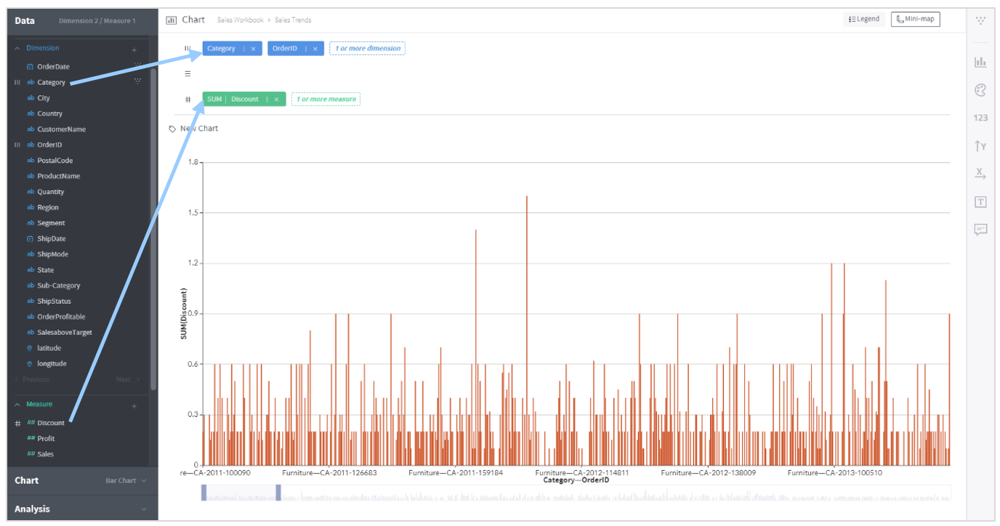

Drawing Charts (Pivoting)¶
What is ‘pivoting’?¶
Pivoting is a process of grouping the given table by elements of specific columns, thereby helping the analyst view particular aspects of the source data in a graphic or tabular chart. This process includes selecting columns that contain meaningful data and placing them on the column/row/cross shelves.

In the example shown above, two dimension columns are placed on the column shelf and one measure column is placed on the cross shelf. The chart displays data resulting from the columns placed on the shelves in this way.
Mandatory/recommended column types for each shelf vary depending on the chart type. Selecting a chart type before placing columns on a shelf shows the necessary column types for each shelf.

Column/row/cross shelves¶
Think of the structure of Excel to understand what column/row/cross shelves work for. As shown below, the crossing of each column and row cross contains a value.

Whereas data is shown in a grid composed of secondary values such as columns, rows and crosses in Excel, Metatron is an OLAP data discovery tool capable of multidimensional data searching. In the following Metatron chart, the column, row, and crossing axes form a three-dimensional cube.

If the values of an Excel grid are displayed in a three-dimensional chart, each crossing value will be represented by a bar. However, Metatron needs to display such a chart two-dimensionally; for this, bars either in the same column or in the same row get stacked at one point while remaining distinctive from one another. The resulting two-dimensional chart is shown in the gray area of the chart below.